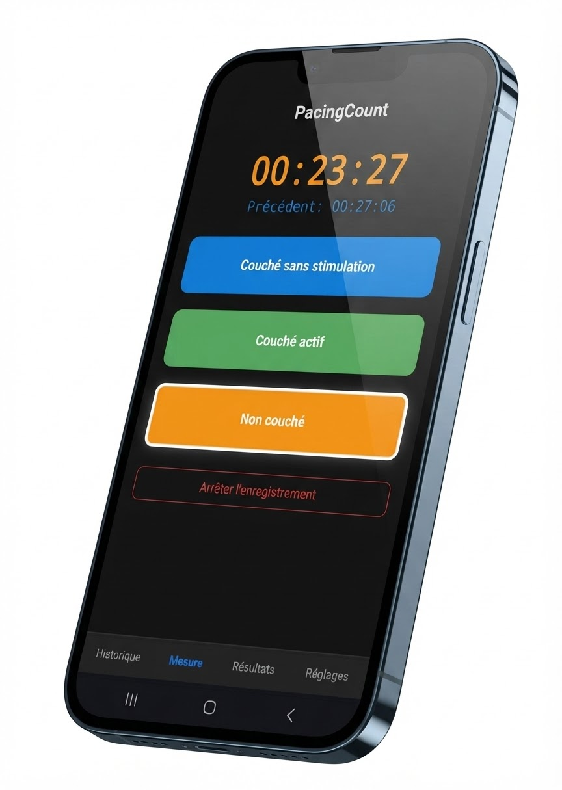
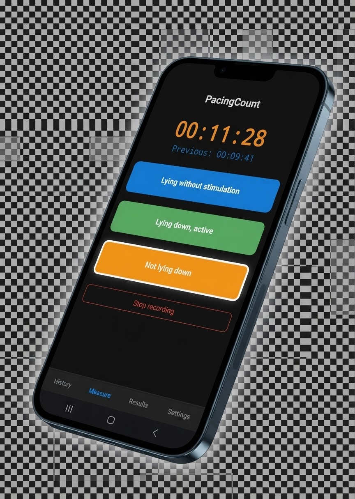
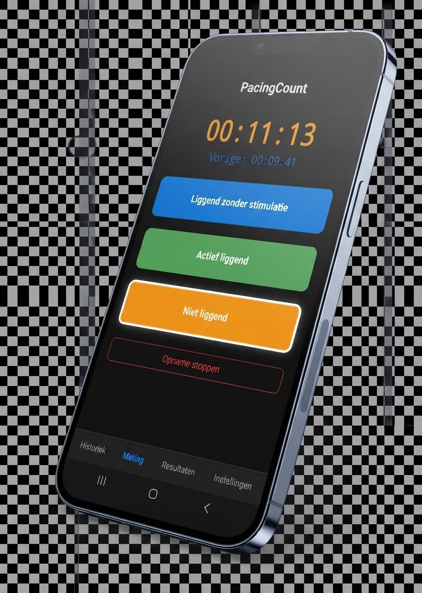

Mesurer son pacing, en douceur Track your pacing, gently Je pacing meten, op een zachte manier
PacingCount est une application légère conçue pour vous aider à enregistrer, visualiser et équilibrer vos temps d'activité et de repos (EM/SFC, Covid Long et autres conditions requiérant un pacing quotidien) PacingCount is a lightweight app designed to help you log, visualize, and balance your activity and rest times (ME/CFS, Long Covid, and other conditions requiring daily pacing) PacingCount is een lichte app ontworpen om je te helpen je activiteit- en rusttijden te registreren, visualiseren en in balans te brengen (ME/CVS, Long Covid en andere aandoeningen die dagelijkse pacing vereisen)
Cliquez et suivez les instructions d'installation Click and follow the installation instructions Klik en volg de installatie-instructies



Ce qu'en pensent les utilisateurs·trices What users are saying Wat gebruikers zeggen
« Merci pour cette merveilleuse app, je suis vraiment heureux de l'avoir découverte, ça m'aide déjà beaucoup après seulement quelques jours. »
“Thank you for this wonderful app, I'm really happy to have discovered it, it's already helping me a lot after just a few days.”
“Bedankt voor deze geweldige app, ik ben echt blij dat ik het ontdekt heb, het helpt me al veel na slechts een paar dagen.”
« Je vois mon médecin bientôt, je pense lui parler de votre appli qui m'aide beaucoup. »
“I'm seeing my doctor soon, I think I'll tell them about your app which is helping me a lot.”
“Ik zie mijn dokter binnenkort, ik denk dat ik hem over je app ga vertellen die me erg helpt.”
« Top, l'appli👍👍👍. Je l'utilise que depuis 3 jours, mais me donne des informations précieuses. Grand merci. A mettre entre toutes les mains des malades d'EM. »
“Great app👍👍👍. I've only been using it for 3 days, but it gives me valuable information. Huge thanks. Should be in the hands of all ME patients.”
“Top app👍👍👍. Ik gebruik het pas 3 dagen, maar het geeft me waardevolle informatie. Enorm bedankt. Zou in de handen van alle ME-patiënten moeten zijn.”
« J'utilise l'application maintenant depuis 2 semaines et j'adore la facilité de manipulation, enfin j'arrive à voir mes moments de pacing, repos disons, et peut-être arriverai je à diminuer les MPE grâce à cela. Un énorme Merci pour la création de cette appli, vraiment 🙏💙 »
“I've been using the app for 2 weeks now and I love how easy it is to use. I can finally see my pacing moments, let's say rest, and maybe I'll manage to reduce PEM thanks to this. A huge Thank You for creating this app, truly 🙏💙”
“Ik gebruik de app nu 2 weken en ik hou van het gebruiksgemak. Ik kan eindelijk mijn pacing-momenten zien, rust zeg maar, en meesschien lukt het me hierdoor om PEM te verminderen. Een enorme Dankjewel voor het maken van deze app, echt 🙏💙”
« Un très grand merci pour la création de cette application...les mises à jour et améliorations 🙏🙏🙏🙏💝 »
“A huge thank you for creating this app... the updates and improvements 🙏🙏🙏🙏💝”
“Heel erg bedankt voor het maken van deze app... de updates en verbeteringen 🙏🙏🙏🙏💝”
« J’adore ton application, je la trouve vraiment utile. C’est facilitant aussi pour faire le suivi et les graphiques permettent d’avoir un bel aperçu de l’évolution du temps couché. Merci d’avoir développé cette application et de me l’avoir proposée. Je suis certaine que si tu en parles plus largement, d’autres l’apprécieront aussi. »
“I love your app, I find it really useful. It makes tracking easier and the graphs give a great overview of the evolution of time spent lying down. Thank you for developing this app and sharing it with me. I'm sure if you talk about it more widely, others will appreciate it too.”
“Ik hou van je app, ik vind hem echt nuttig. Het maakt het bijhouden makkelijker en de grafieken geven een mooi overzicht van de evolutie van de tijd liggend doorgebracht. Bedankt voor het ontwikkelen van deze app en om het me voor te stellen. Ik ben er zeker van dat als je er breder over praat, anderen het ook zullen waarderen.”
Rejoignez la communauté ! Join the community! Word lid van de community!
Échangez vos astuces, donnez votre avis et suivez les nouveautés sur le groupe Facebook des utilisateurs·trices Share your tips, give feedback, and follow new updates on the users' Facebook group Deel je tips, geef feedback en volg nieuwe updates op de Facebook-groep voor gebruikers
Groupe Facebook Facebook Group Facebook-groep